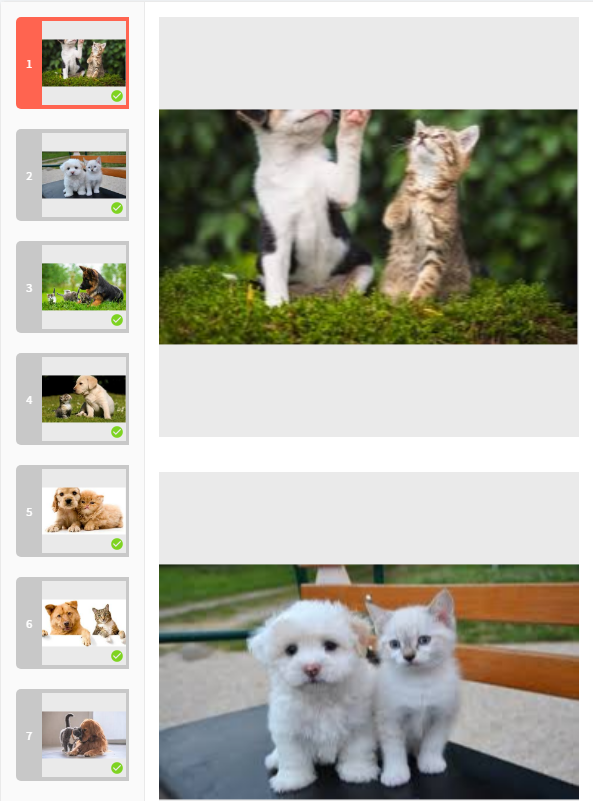
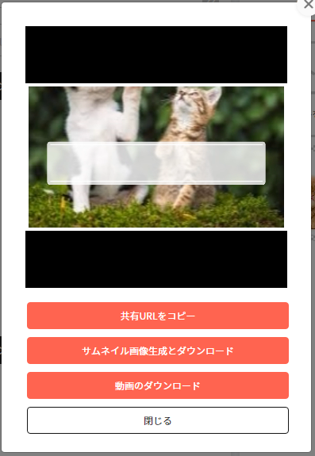
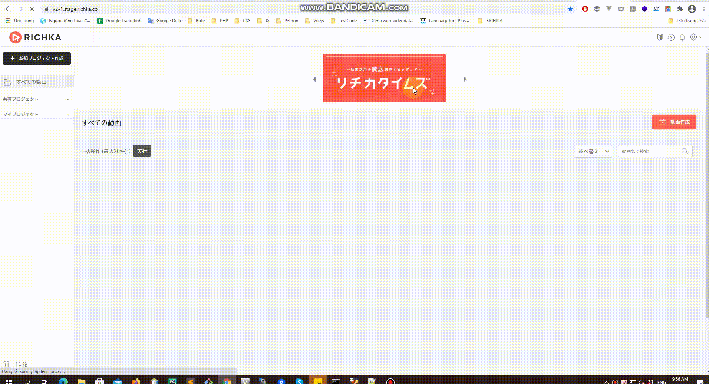
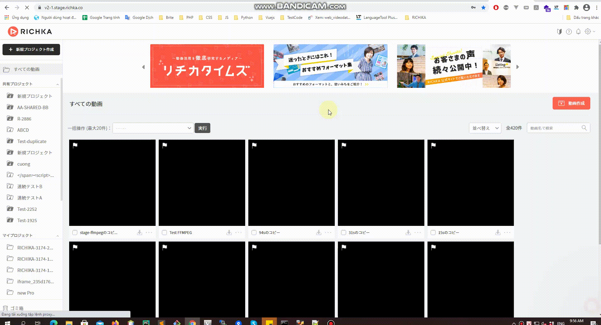

Page Speed Improvement of Videos on RICHKA
Like other video systems, RICHKA GUI also suffered from the slow loading of the pages because there are many images and videos.
In this post, we share the past effort that we made the page speed of video list and format list on top and edit page faster with integrating a delayed loading of video contents.
First, we introduce about videos in RICHKA GUI. There are 2 main pages:
- TOP page:
- show generated videos. (1)
- show template videos for selecting when creating a new video data. (2)

- EDIT page:
- show videos and images in scenes for generating video. (3)

- show videos and images in library of video data, library of user, searching from videos and images side, capturing from other website, PDF file (4)

- show template videos for selecting another template as same as creating a new video data in TOP page (5)

- show generated video (6)

- show sample video (7)

Performance Improvements
Pagination and Search
Number of videos and images are large and displaying all of them is too slow. Therefore, we limited the number of videos and images to be shown at a time.
Load the video only after loading the page
- Except for videos and images in scenes (3), we didn't get video in loading page processing.
- In almost of cases, we will call an Ajax for loading them.
- The flow is:
- After loading a page or loading popup, an Ajax will be called.
- In the request processing, a loading page or loading icon will be displayed.
- After response is returned, hide the loading page or loading icon, then show videos and images.

Loading a limited number of videos one by one
In above improvement, in case of videos, we don't show all of them in the same time.
function loadGroupVideojs(videoItems, modal_id, after_video_loading) {
loadVideojs(videoItems, 0, modal_id, after_video_loading);
setTimeout(loadVideojs(videoItems, 1, modal_id, after_video_loading), 50);
setTimeout(loadVideojs(videoItems, 2, modal_id, after_video_loading), 100);
setTimeout(loadVideojs(videoItems, 3, modal_id, after_video_loading), 150);
setTimeout(loadVideojs(videoItems, 4, modal_id, after_video_loading), 200);
}
function loadVideojs(videoItems, index, modal_id, after_video_loading){
var video = videoItems[index];
...
var poster = video.getAttribute('xx-poster');
if (poster === null) {
if (video.getAttribute('preload') === 'none') {
video.setAttribute('preload', 'metadata');
addDurationTimeToVideo(video);
}
}
...
index += 5;
if (index < videoItems.length) {
setTimeout(loadVideojs(videoItems, index, modal_id, after_video_loading), 400);
}
}
Like above code, we loaded five videos 50ms apart. When the videos have been loaded, the next videos are loaded in the end of function loadVideojs.
When all of the videos have been loaded, the recursive function call of loadVideojs ends.

Use preload and thumbnail attributes in video tags
All videos in RICHKA have thumbnail images. There are 2 types of videos:
- Normal video: only play
- In this case, video tags will be rendered with 2 attributes:
preloadattribute is none andxx-posterattribute is a thumbnail - When videos are visible, the poster attribute will be created with
xx-poster - When videos are played, the video contents will be loaded
- In this case, video tags will be rendered with 2 attributes:
- Special video: need video information such as height, width, duration time
- We read video information and save to the video name into database
- When videos are rendered, we use thumbnails and use video information to crop
- When users hover over videos, thumbnails are removed and video tags whose
preloadattribute ismetadataare added with a style of thumbnail.